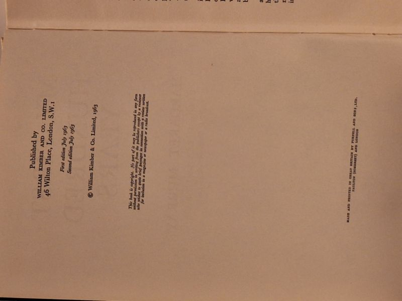

My First Hundred Years
Margaret Murray · William Kimber & Co. Ltd., London, 1963

C$120 · Very Good condition
'My First Hundred Years' - the autobiography of the celebrated Egyptologist, anthropologist and folklorist Margaret Murray (1863-1963), Fellow of University College London, written and published in her centenary year. William Kimber, London, 1963 (second edition, issued the same month as the first). Hardcover in the original brown pictorial dust jacket showing light edge wear and a small corner chip. A handwritten gift inscription on the front free endpaper. Boards and text block clean and sound; a scarce title.
Details
- Publisher: William Kimber & Co. Ltd., London, 1963
- Binding: Hardcover
- Edition: Second edition (July 1963), issued the same month as the first edition
- Condition: Very Good
- Dust jacket: Good
- Category: Biography